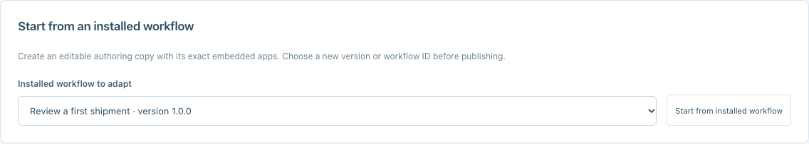
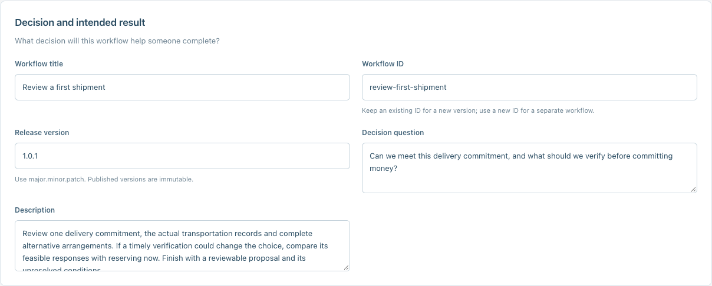
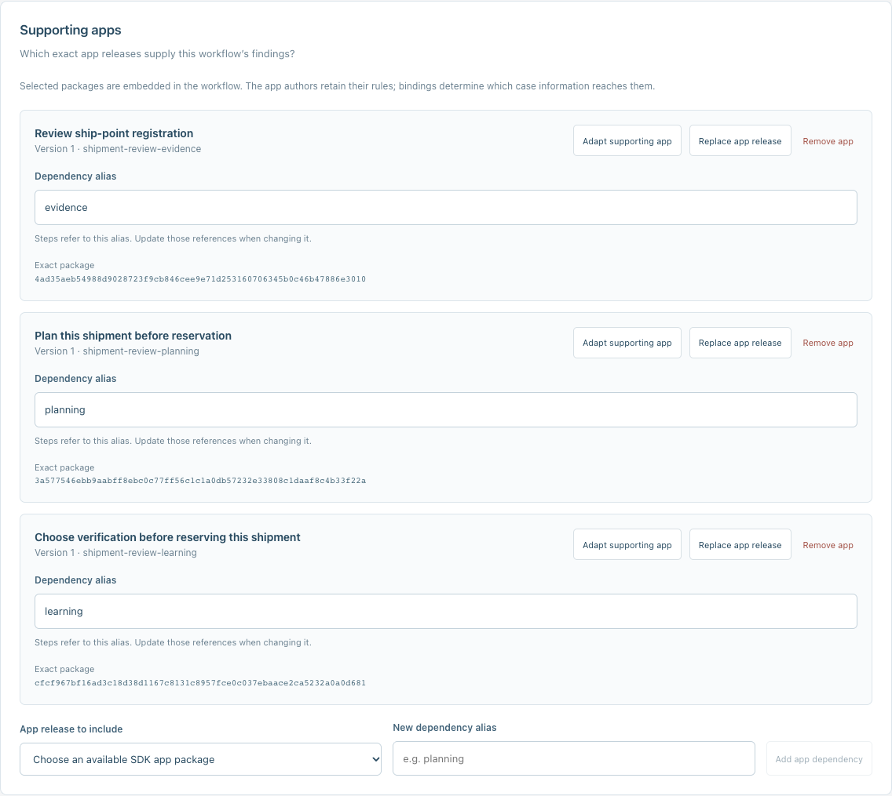
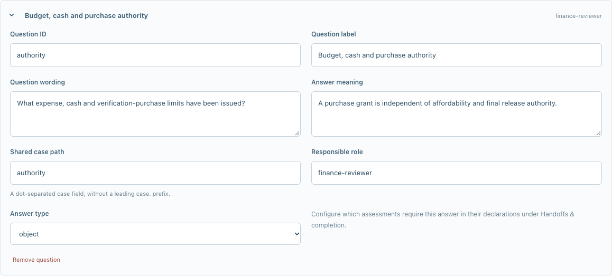
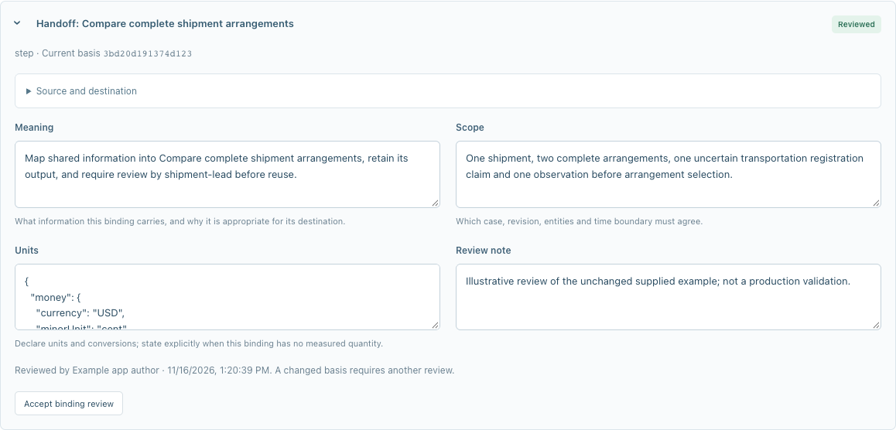
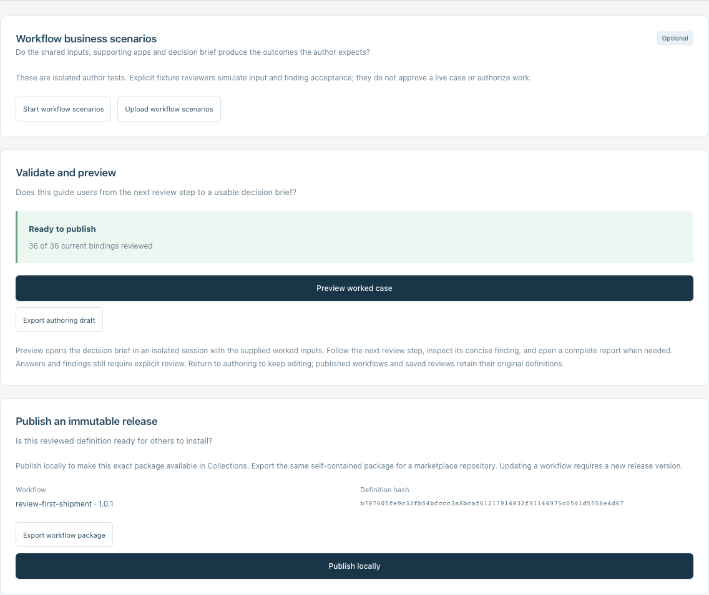
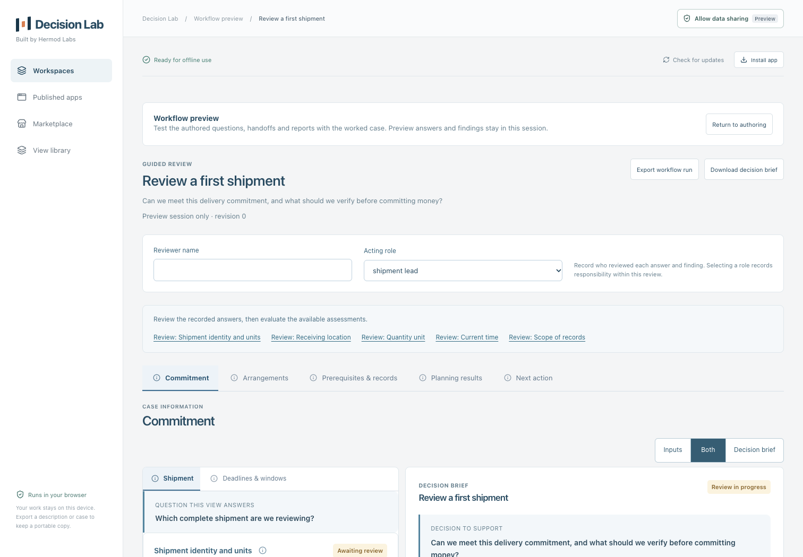
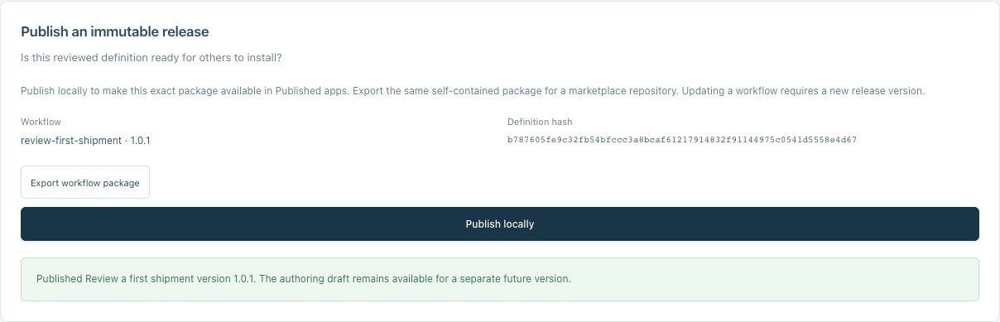

Requirements reference: Walmart’s checklist, p. 11 (collect suppliers). Business context: 8th & Walton (Terry Clear, June 4, 2025). This walkthrough uses a source-informed fictional example. Sources and demonstration scope.
This archived authoring exercise shows how an app author prepares a decision process that other people can run. For this first exercise, we reuse Review a first shipment and its existing evidence, planning and learning apps. The public interface calls this workflow authoring.
The author’s job is to make the questions, responsibilities and handoffs clear enough for a case worker to use. The supplied reasoning contracts stay in place. The case worker then supplies and reviews the facts of a particular shipment.
A shipment plan describes the intended route, dates and cost. An arrangement connects the work, people, resources, permissions and dependencies needed to carry it out over time. Those connections change as conditions and evidence change. This app reviews recorded versions, so case workers update answers and reassess affected findings. See The Arrangement Problem in Human Decisions for the broader concept.
When adapting a current definition, inspect the Workflow execution policy card. Calculation workflow lets valid supplied inputs and complete current findings feed the next calculation. Reviewed workflow — legacy preserves the earlier acceptance requirements, including when adapted. Changing that policy requires an explicit new model revision with compatible handoffs and completion conditions. The author’s binding reviews check the configuration before publication; they are separate from the per-case acceptance steps removed in calculation mode.
1. Open the retained authoring exercise.
The screenshots and controls below document the archived reviewed release. To reproduce it, open Decision Lab and choose Workspaces → Create workflow; use the retained draft rather than assuming the newest Marketplace release has the same execution policy.
For this retained exercise, import the original reviewed authoring draft through Import workflow to preserve the exact embedded releases. The original capture below shows the former Marketplace source. If that original release is already installed, under Start from an installed workflow, select Review a first shipment · version 1.0.0 and choose Start from installed workflow. This creates an editable authoring copy with the exact supporting apps already embedded.
This route lets us examine the retained configuration. Creating a new generic reasoning template is separate work for a template author.


2. Define the decision and release.
In Decision & result, check the decision question: “Can we meet this delivery commitment, and what should we verify before committing money?” Keep the workflow ID review-first-shipment and set Release version to 1.0.1.
A published version is immutable. Keeping the ID and choosing a higher version records a new release of this workflow; a different workflow should have a different ID. The collection and use-case fields determine where the release appears locally.
For this exercise, the question, description, domain profile and worked inputs stay as supplied. We are testing whether people can understand and use the existing configuration before expanding its business scope.


3. Check the supporting apps.
A pattern describes a reusable solution to a recurring problem, together with the context and conditions that make it useful. We stitch these solutions together for the decision at hand. A pattern can inform several apps, and an app can draw on several patterns. See Pattern Languages for Human Decisions for how these approaches connect.
Supporting apps identifies the three app releases that put these approaches to work in this shipment review:
- Review ship-point registration applies evidence interpretation: determine which transportation states remain compatible with the reviewed records, preserving uncertainty where the records leave the registration question open.
- Plan this shipment before reservation applies a feasibility pattern: check each shipment plan and its recorded arrangement against the declared timing, readiness, resource and authority requirements.
- Choose verification before reserving this shipment applies learning before commitment: compare acting now with a verification followed by a supported response, accounting for the check’s cost and timing.
The reusable pattern explains an approach. Each configured app supplies specified reasoning for this domain. The workflow connects those apps, their questions, responsibilities and findings for the shipment decision. Reuse still requires checking that their meanings and conditions fit the intended work.
The exact package hashes identify the releases being reused. Retain them for this feedback exercise. Changing a label does not change an app’s underlying rules or add a new business requirement.
Within a supporting assessment, the case worker sees the decision before the complete analysis. Evidence leads with the supported answer or uncertainty; planning leads with the preferred arrangement, comparison priority and blockers; learning leads with acting now versus verification. The archived interface uses selected details and Technical inspection → Inspect complete report for supporting analysis; the current renderer calls those assessment views Decision summary / Supporting reports. Both display the same frozen calculations and waive no requirement.


4. Check questions and responsibilities.
In Questions & roles, inspect how each business question connects to its answer meaning, shared case path, answer type and responsible role. The configuration contains 25 questions, grouped into the case worker’s review stages.
For example, Budget, cash and purchase authority supplies the authority object and belongs to finance-reviewer. A spending ceiling, available cash and permission to buy verification are separate parts of that answer. The shipment lead supplies the commitment, shipment plans, their recorded arrangements and operating records.
In Shared information, review the shared paths and the supplied worked inputs. The dates, time origin, currency and quantity unit must mean the same thing across all three apps. Making these concepts and relationships explicit is part of Ontology Engineering for Human Decisions: it helps reusable solutions exchange findings while preserving their business meaning. An unknown answer must remain unknown until the case worker has a basis for changing it.
Review the source wording before turning it into a structured answer. “The ship point is set up” might mean that a portal listing exists or that transportation registration is complete. Computational Hermeneutics for Human Decisions explains how making an interpretation explicit lets people examine the conclusions it supports. Here, people clarify the intended meaning and its scope and conditions, then use the configured review to inspect the consequences.


5. Review the handoffs.
Handoffs & completion declares required answers, prior findings and completion conditions. The evidence review supplies the retained transportation states to the planning app, which assesses shipment plans and their recorded arrangements across those states. Planning also checks the responses available after fast and slow verification. The verification comparison uses those supported responses to assess checking first against reserving now.
Carry those shared meanings into each handoff. Check that findings concern the same shipment, order and revision, with compatible scope, time and units; distinguish the reservation cutoff from the receipt deadline; retain every operating state compatible with the records; and include a verification fee once in the relevant cost comparison. A handoff needs that business meaning as well as matching field types.
The retained authoring exercise requires review of 36 bindings: the decision, three apps, 25 questions, five assessment handoffs, the decision brief and its presentation. Open each review and check its Meaning, Scope and Units against the intended use before choosing Accept binding review. Check that the handoff preserves the reviewed interpretation of the source statement, including its conditions and remaining uncertainty. A changed basis requires another review.
Our screenshots use the illustrative actor Example app author. Each review note identifies the unchanged example as a demonstration. A recorded name and a passed publication check do not establish production approval or authenticate a reviewer.


6. Preview the working case.
In Preview & publish, resolve validation issues and unapplied section edits. The example reaches 36 of 36 current bindings reviewed, making export and local publication available.


Choose Preview worked case to open the real guided-review interface in an isolated session. It starts at Next action, with the current decision status and Next review step. Check that this action identifies the right question or assessment and responsible role, and that selecting it navigates without accepting the task automatically.
The worker’s Inputs groups and subtabs are independent of the Reports groups. Test that an input question can stay beside Next action, that Forms / YAML switches between authored questions and the complete shared case, and that unfinished edits survive navigation. Planning results opens supporting assessments; the Reports pane’s Reports group opens the authored report views. Changing these selections must leave answers and reviews unchanged.
Check the compact findings first, then open supporting details when needed. In a question-focused release, also check that the authored summary fields and comparison answer the business question, that missing values remain visible and that inspecting another arrangement stays synchronized across the brief and report. A new field in complete SDK output must not automatically add another visible column. Inspecting a row must leave business choices, reviews and permissions unchanged. The questions must be understandable, the roles must make sense and unresolved conditions must stay visible. Supplied answers still need explicit case review; publication does not turn fictional defaults into evidence.
The case-worker reference guide runs this same exported version through its assessments. It shows the known baseline results so a reviewer can check the complete process. Choose Return to authoring to continue configuring the draft.


7. Publish and hand over the release.
Choose Publish locally. In Choose a collection, choose Create another collection and create Shipment review pilots. Enter Review a first shipment as its new use case, then choose Add to collection. This makes version 1.0.1 available in a separate local collection while the installed Marketplace collection keeps its original pinned workflow.
The installed collection cannot silently substitute a different release for its published product pin. Keeping the pilot separate lets the team test this release alongside the original. It does not update the public Marketplace. Choose Export workflow package to transfer the same self-contained workflow to another person; its collection membership does not change the frozen definition.


Download the published shipment workflow (.workflow.json). A case worker can import it in a separate browser profile without the original shipment workflow through Collections → Import app, workflow or case, then open Guided reviews and choose Start review. On this device, use the release already published in Shipment review pilots. New reviews have supplied starter inputs that must be reviewed and replaced with the facts of the actual shipment.
To inspect or continue the author’s configuration, download the authoring draft (.workflow-draft.json) and use Workspaces → Create workflow → Import workflow. The draft and published package serve different purposes: the draft remains editable, while existing case reviews retain the exact published definition they started with.
8. Collect feedback on the existing template.
Ask a shipment lead and a finance reviewer to work through the same case without coaching. Use the business process chart as a reference, and record where the app departs from their actual work.
- Which questions require information they cannot obtain, and who actually owns it?
- Which real launch prerequisites or approvals have no explicit representation?
- Can they explain why a shipment plan is blocked and what would need to change in its arrangement to support it?
- Does the final proposal identify a useful next action, its owner and the remaining conditions?
Use those observations to decide what the next template must model. This first release is a way to get feedback on a bounded decision review; retailer onboarding, system setup and operational execution need their own explicit coverage before this becomes a complete launch process.